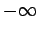

Inhalt Index DeskTop Bronstein

 Wahrscheinlichkeitsrechnung und Mathematische Statistik Wahrscheinlichkeitsrechnung Zufallsgrößen, Verteilungsfunktionen Verteilungsfunktion
Wahrscheinlichkeitsrechnung und Mathematische Statistik Wahrscheinlichkeitsrechnung Zufallsgrößen, Verteilungsfunktionen Verteilungsfunktion


Die Verteilung der Zufallsveränderlichen X wird durch die Verteilungsfunktion beschrieben:
Sie gibt an, mit welcher Wahrscheinlichkeit die Zufallsgröße X einen Wert zwischen  und x annimmt. Die Verteilungsfunktion hat die folgenden Eigenschaften: